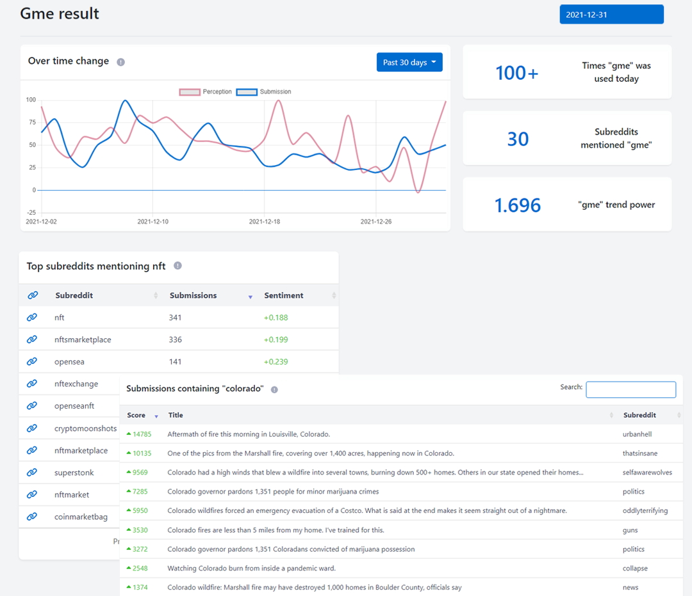
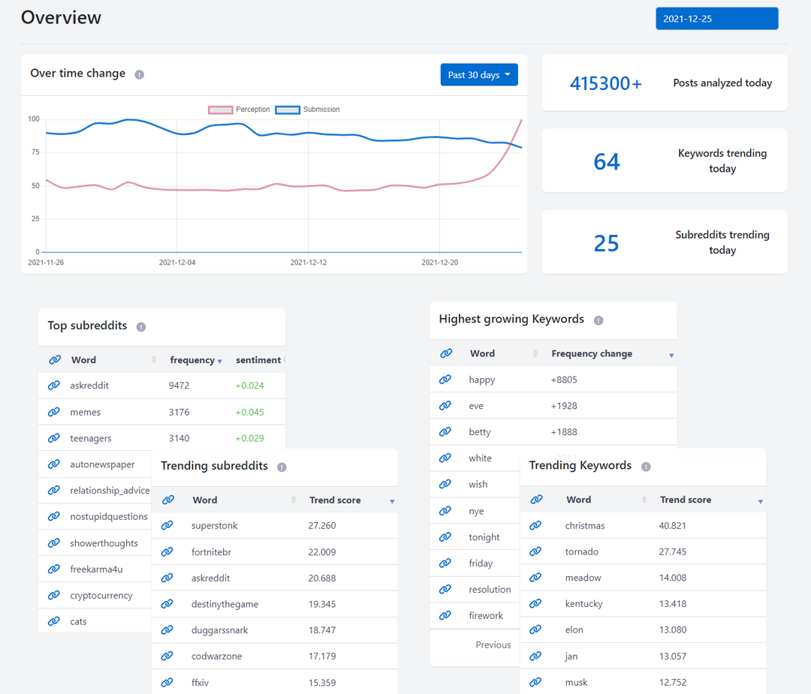
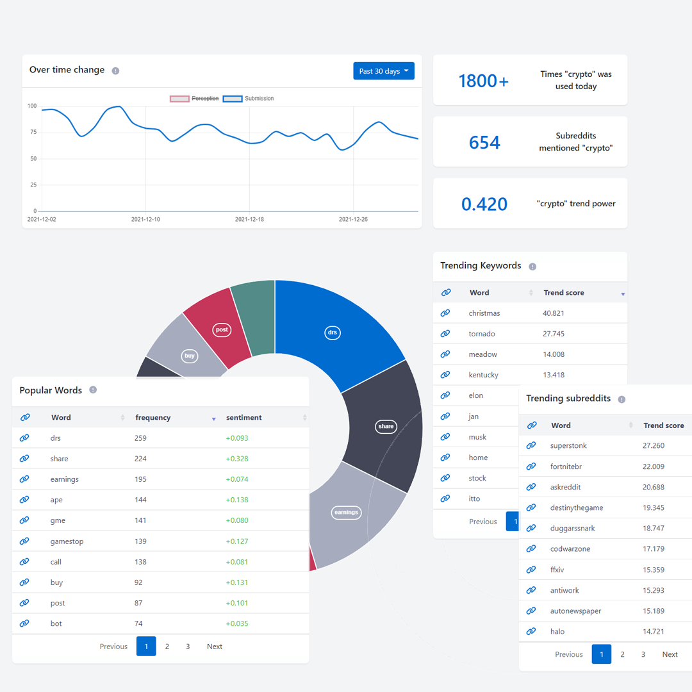

For a while I was curious about trending topics and Subreddits on Reddit and there weren't any tools available for it online so i decided to build one myself. In this article I will explain how I approached this problem and some of the issues I faced.
Choosing the frameworks
The first step was choosing the framework for the project. I wanted to the application to handle all the operations from collecting, hosting and processing the data to UI and APIs. I decided to pick Django as the framework because of the sheer amount of documentations and tutorials it has, the amount of of features it has and it's popularity.
I had prior experience working with Servlet in Java but this was my first introduction to Django. I started by watching freeCodeCamp's video which explained all the basics pretty well and then used the official documentations whenever I was curious about something like APIs or tokens.
I decided to go with PostgreSQL as the database because of it's features and Django's support. Finally picking Bootstrap for the UI framework was a no-brainer. It greatly simplified the process of designing the pages and had many helpful documentations for when I got stuck.
Crawling Reddit
There are a couple of APIs to get Reddit information from each with it's features. By the end of the project I was gathering data from 3 APIs. In this section I will explain how I used each APIs:
- Pushshift: One of the best APIs to get submissions for any date until few seconds ago. It has a decent speed with upto 120 requests for 100 submissions a minutes but the data is not updated with any edits and doesn't have updated scores
- Pushshift Beta: Similar to Pushshift but it can handle 1000 submissions per request Making it much faster. Although the data is not upto date like Pushshift it's speed makes it a much better option for crawling older content
- PRAW: A Reddit API wrapper that provides a stream for listening to submissions and can provide data on the each submission's score as well as a subreddit's sub count. The rate limit is much lower compared to Pushshift sitting at only 30 requests per minutes.
Processing the data
Daily submissions on Reddit exceeds 1 million so before moving forward the first step was to remove duplicate and NSFW submissions. Every submission with an NSFW tag or inside an NSFW subreddit was automatically removed from the list. Alongside that all duplicate submissions were removed to reduce the effect on bots on the result. All of these reduced the number of daily submissions to approximately 700k which greatly increased the processing speed and reduced the storage amount.
The next step was to clean the data. I started by removing all links, numbers and special characters. I tokenized and tagged every word using NLTK library and applied lemmatization using WordNetLemmatizer. I proceeded by removing tags that didn't contribute much to the end result such as pronouns, auxiliary, determiner and etc. I finished the cleaning by removing stop words using NLTK stop words and stop_words library's stop words.
Afterwards I applied sentiment analysis on all submissions and used scikit-learn's CountVectorizer to count the occurrences of each word in submission. The lengthiest process was generating rows of data for every keyword, subreddit and Reddit as a whole. To speed up the process I modified the code to enable the usage of multiple threads and utilized features in PostgreSQL like constraints and indexes. By combining these features I managed to reduce the time it takes to process one day's data from more than a day to one hour.
One of my goals was to find out which keywords and subreddits were trending on Reddit. To accomplish this I started by using the Mann-Kendall test using the library pyMannKendall. The algorithm proved inefficient for this task as it favored high frequency number over gradual increase in frequency. I then experimented with different indicators before settling on MACD.
UI and frontend
The most challenging part of this project was developing the frontend since I didn't have much experience in the area but with how simple well documented Bootstrap is and using libraries such as ChartJS and DataTables it didn't take me long to figure it out.
I started by drawing a sketch on what the different pages would look like then slowly started coding them. I filled up the tables with place-holders and kept improving the design until I was satisfied with the result. This mainly involved reading in depth about Bootstrap and modifying the CSS and HTML codes.
I finished the application by enabling REST APIs for every data types such as summary, keywords and etc as well as parameters such as date, keywords, subreddit and how to sort. I then switched from using hardcoded values to dynamic data retrieved using different APIs.
